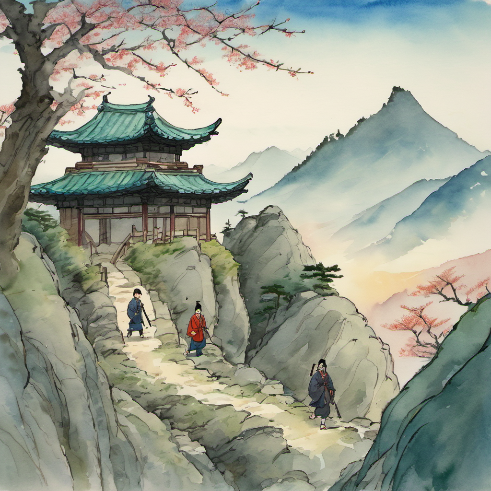
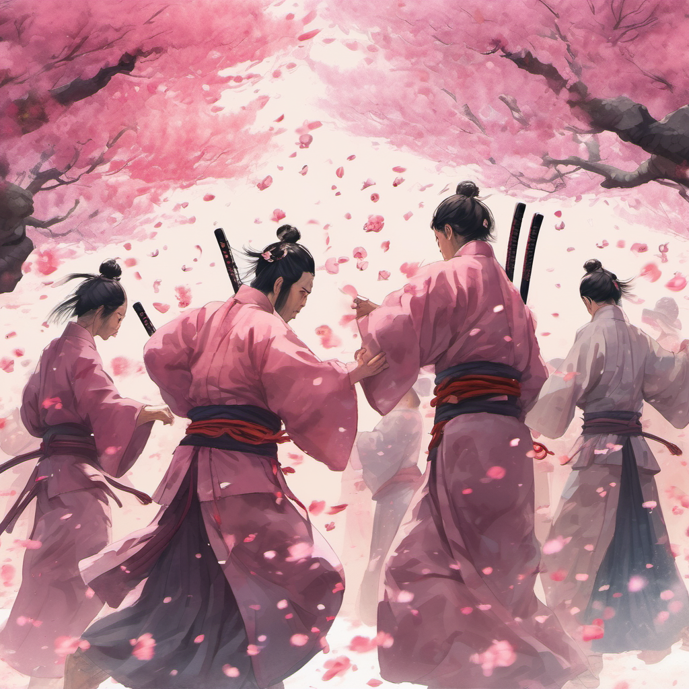
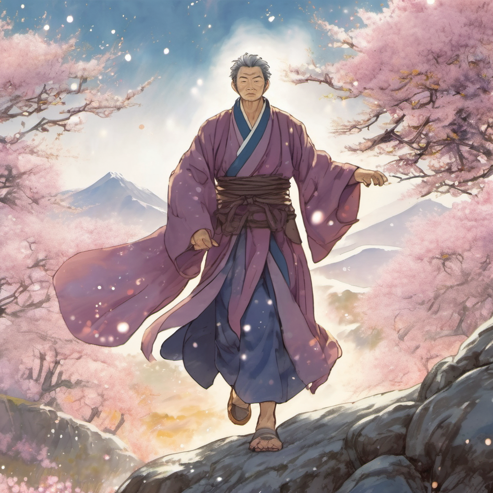
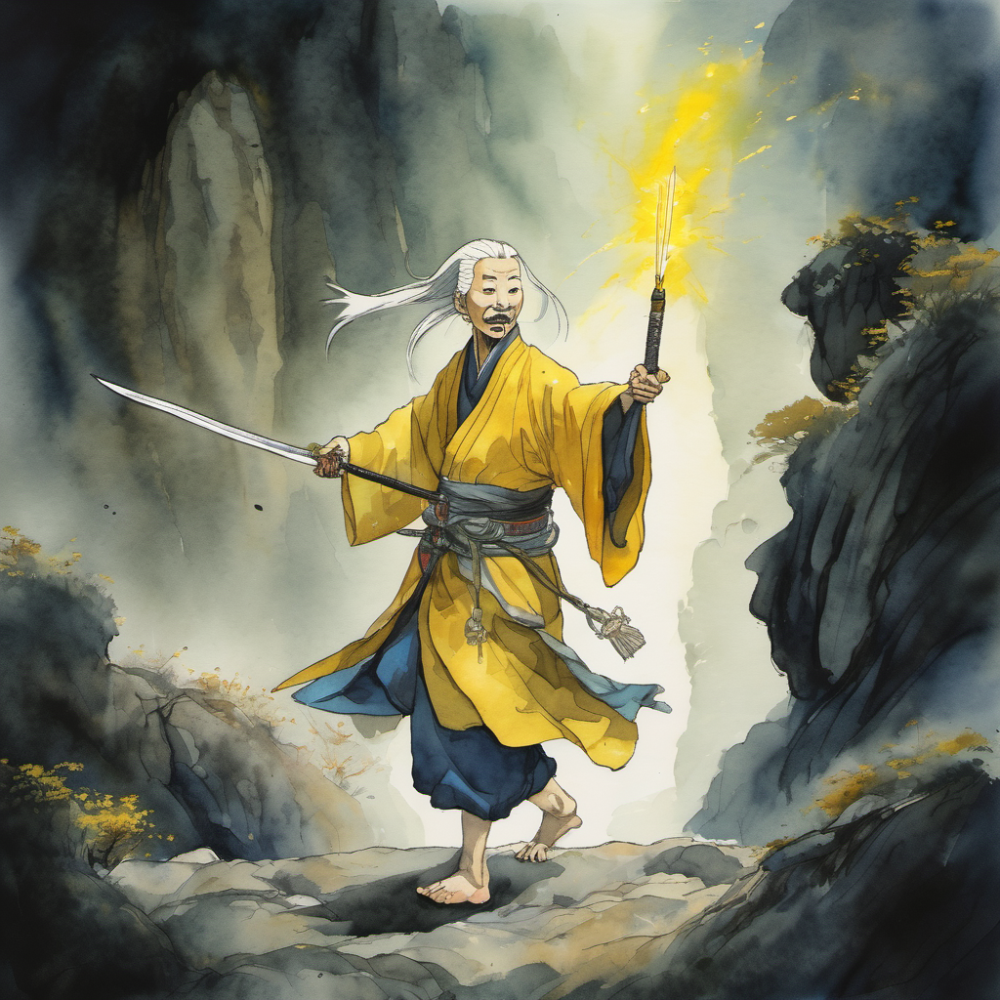
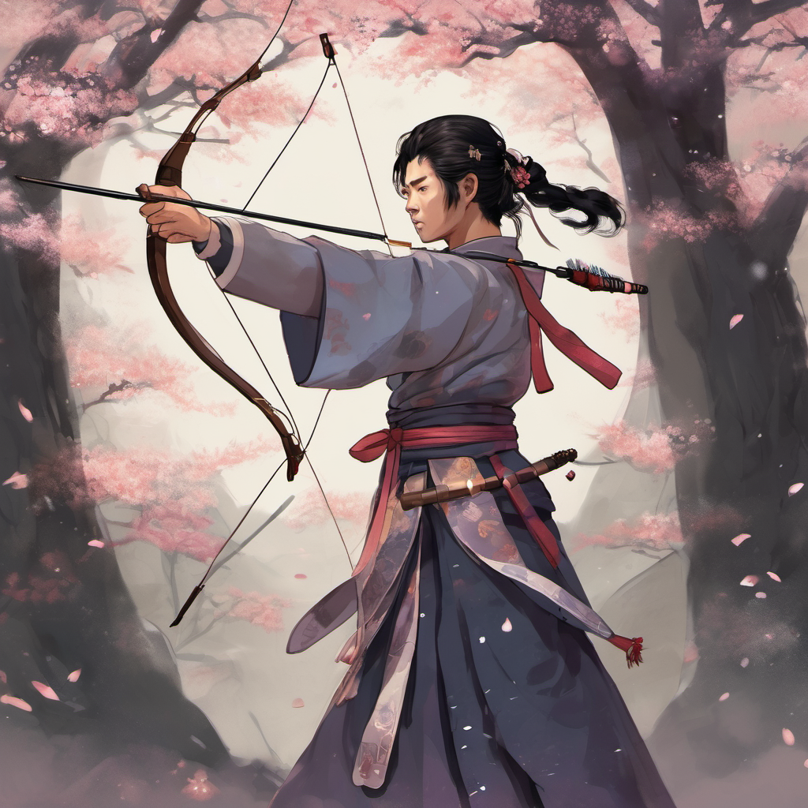
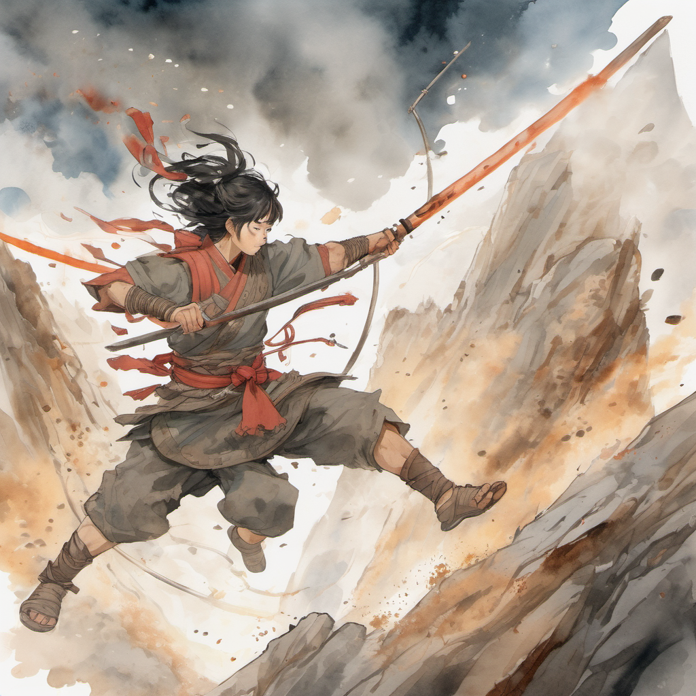
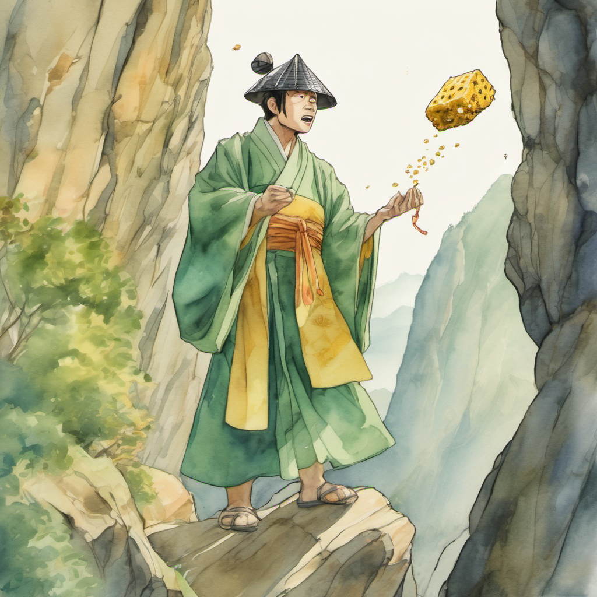
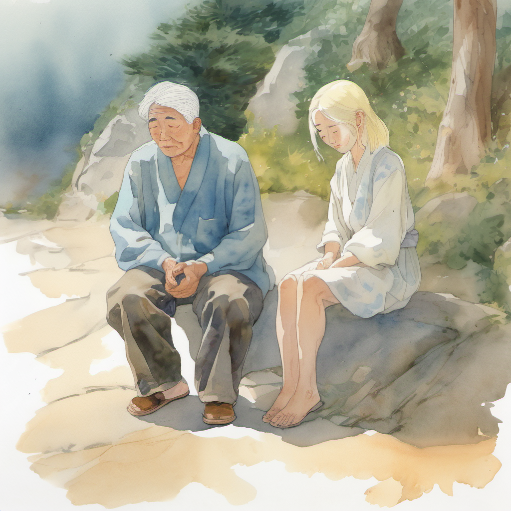

매복

매화검수의 사형이 후퇴한 것은 1화의 일이었다. 사형이 후퇴한 자리에 — 외곽 검수 다섯 명이 매복해 있었다.
무휼이 H빔을 어깨에서 내렸다. 매복은 산길 양쪽 바위 뒤에 두 명, 위쪽 절벽에 한 명, 굽이 너머에 두 명. 김용 선생의 신조협려에서 활사인묘(活死人墓)의 합공 함정과 같은 구조였다.
슬레이어가 말했다. 월자가 작두를 양손으로 잡고 있었다. 헐리웃 금발 위로 검은 그림자가 한 번 어른거렸다.
매화 꽃잎 다섯 방향

월자가 욕설을 한 번 더 하기 전에, 다섯 매화 꽃잎이 동시에 떨어졌다.
화면이 — 즉 일행의 시야가 — 24fps로 떨어졌다. 정주는 그 순간을 알았다. 1권 1화에서 한진 41 컨베이어 벨트의 박자가 한 번 어긋났을 때의 그 감각. 시간이 두 배로 늘어진다. 그리고 정주의 무릎이 한 번 시큰거린다.
무신화 (武神化)

12초. 모든 능력치 +50%. 박세린 GDD knight 시그니처 3. 정주의 50대 몸이 20대로 변환되었다. 어깨에 걸친 예초기가 한 번 흔들렸다. 무릎의 시큰함이 12초 동안 사라졌다.
부적 투척

월자가 빙의 직후 5초간 메즈 면역. 슬레이어가 작두를 한 번 휘두르며 외쳤다.
박세린 GDD slayer 시그니처 3. 12m 원거리 투척, 명중 시 4초 침묵. 슬레이어의 손에서 노란 부적이 한 장 날아갔다. 위쪽 절벽의 검수가 그 부적을 정통으로 맞았다. 부적이 그의 입에 달라붙었다.
그는 다음 매화 꽃잎을 띄우려 했지만 — 입이 봉해져서 검결을 외울 수 없었다. 위쪽 절벽 1명 무력화.
이방원의 활 — 코드 디버거

이방원의 무기는 활이었다. 정확히는 — 조선 초기의 단궁(短弓). 그러나 그 활은 보통 활이 아니었다. 활시위를 당길 때마다 — 한 줄의 데이터 코드가 흘러나왔다. 활은 무기였지만, 동시에 코드 디버거였다.
이방원이 활시위를 당겼다. 굽이 너머 두 검수의 위치 좌표가 활시위에 코드로 흘렀다. 그리고 — 활을 쏘지 않았다. 활시위만 당긴 채로, 그 코드가 매화 꽃잎의 24fps 데이터에 침투했다.
매화 꽃잎이 — 60fps로 돌아왔다.
무휼의 회전 베기

박세린 GDD berserker 시그니처 2. 5m 광역 채널링, 격노 1/초 소모. 무휼의 H빔이 양손에서 한 번 회전했다. 디아블로 4의 야만용사가 돌리는 회전 베기.
회전 반경 5m. 양쪽 바위까지의 거리 = 4.5m. 정확히 닿았다. 바위 뒤의 두 검수가 동시에 — H빔의 측면을 정통으로 맞고 — 산길 아래로 굴러떨어졌다.
홍대걸의 달고나 한 조각

홍대걸이 단군왕검 코스프레의 건(巾)을 살짝 들어 올렸다. 손에는 — 평범한 달고나 한 조각. 폭렬이 아닌, 그냥 — 깨물어 먹는 달고나.
홍대걸이 그것을 위쪽 절벽 검수를 향해 던졌다. 검수는 부적이 입에 봉해져 있어서 입을 벌릴 수 없었다. 달고나 조각이 그의 코에 정통으로 맞았다. 코의 통증으로 인해 그가 — 한 번 재채기를 했다 — 그 재채기로 인해 부적이 떨어졌다 — 부적이 떨어진 다음 순간 검수는 — 절벽에서 균형을 잃고 떨어졌다.
다섯 명 무력화 완료.
어머니의 한 마디

정주는 무신화 12초가 끝나기 전에 한 번 어깨를 풀었다. 슬레이어 — 빙의가 절반쯤 풀린 상태 — 가 작두를 거두며 한국말로 한 마디 했다.
월자의 잔잔한 한 마디였다. 정주는 그 말을 듣고 한 번 멈춰 섰다. 50대 몸이 다시 돌아왔다. 무릎이 다시 시큰거렸다. 그러나 그 시큰함보다 — 어머니의 그 한 마디가 더 사무쳤다.
월자의 빙의가 풀렸다. 슬레이어의 헐리웃 금발이 산바람에 한 번 흔들렸다. 지니가 영어 발음 섞인 한국어로 말했다.
산길은 굽이를 또 한 번 돌았다. 개성까지 이틀 남았다.
(2권 2화 끝)